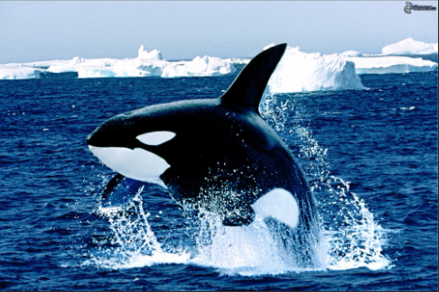
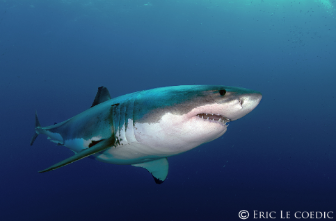
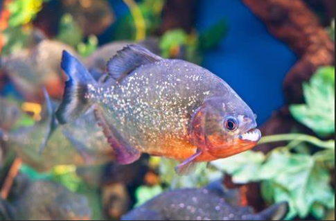

Pour se nourrir ou parce qu'ils se sentent menacés, certains animaux ont des attitudes très violentes
L'orque n'hésite pas à sortir de l'eau pour attaquer un phoque qui se trouve sur une plage ou sur la banquise
 le retoutable requin blanc de 6m de long et le piranha de 50 cm qui vit dans les fleuves d'Amérique du Sud, ont en commun de devenir fous à l'odeur de sang. Que ce soit un animal ou un humain, ils attaquents.